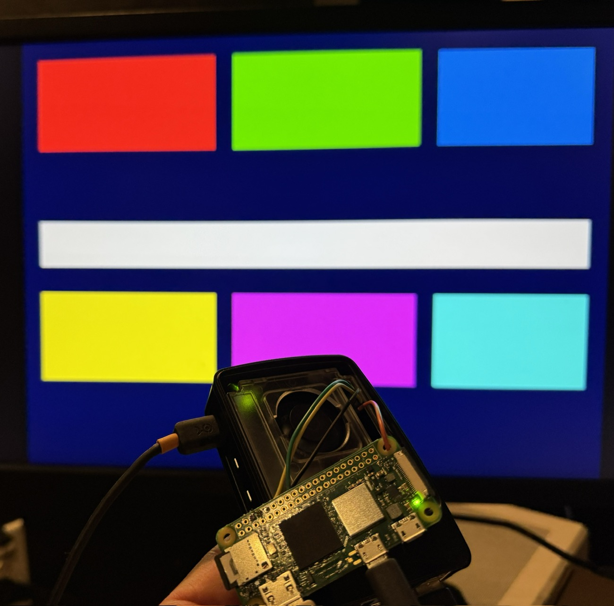

Modus left the emulator. It runs on real Pi Zero 2 W silicon, booted over USB with no card in the slot, and is reached over SSH across a USB Ethernet gadget it implements itself — while the MVM compiler learns to compile its own 759 functions.
A Raspberry Pi has no serial port you can casually plug into and no Ethernet jack on the small ones, so reaching one means USB — and USB is not a thing an operating system gets for free. This week Modus wrote both halves of it.
As a host, on an emulated Pi 3B: a DWC2 host controller driver, device enumeration, hub support, and CDC Ethernet, with the SSH server running over that same network stack. Then USB HID over the boot protocol — keyboard, mouse and tablet — with the keyboard driving the REPL directly. As a device, on a real Pi Zero 2 W: the same controller in gadget mode presenting CDC-ECM Ethernet to the machine it is plugged into, so the Pi appears as a network interface on your desk.
Around it, the peripherals a board actually needs: the BCM2835 system timer, a GPIO LED,
the GPU framebuffer, and the mini UART at 0x3F215040 with 32-bit stores and
TX-ready polling. And a serial bootloader, which is the difference between an afternoon and a
week: a permanent kernel on the SD card receives a new kernel over the wire at 115,200 baud
and jumps to it at 0x300000, driven by a host-side script that resets the board
over GPIO17 first.
Two fixes in this commit exist only because the work moved to real silicon. The MVM
YIELD opcode had been compiled to a bare WFE — wait for event
— which is correct under emulation and stalls a real Cortex-A53 outright; it now pairs
with an SEV. And the hardware random number generator on the BCM2710A1 crashes,
so entropy comes from the timer instead. There is also a persistent bulk-IN channel fix for a
reconnection bug in QEMU’s DWC2, which is the mirror image of the same problem: the
emulator lying in the other direction.
The AArch64 side gained the cooperative actor system — spawn, yield, mailbox send and receive, a scheduler, and real context switching through save and restore of the machine context — with a four-megabyte heap per actor and soft allocation that can fail rather than trap. The arrangement it enables is described in the commit as Qubes-like, and it is the first statement of a principle the project keeps: a net-domain actor owns the hardware, and SSH handlers reach it only through typed mailbox messages, with the boundary drawn at the TCP byte stream. Isolation is a property of the language runtime here, not of a kernel that has to be trusted underneath one.
Three days later the whole stack runs on the real board: DWC2 in gadget mode with
interrupt-driven receive through a four-slot ring buffer serviced by an ISR at
0x1000, an SSH server with Ed25519, X25519 and ChaCha20, an HTTP client with DNS
resolution and an HTTP server on port 80, and actors scheduling all of it. It boots over
rpiboot with no SD card at all, and redeploys over the UART bootloader.

Two of the fixes name a constraint that only exists when a Lisp is the network stack. USB Ethernet has a five-second watchdog; a cold boot that computes its crypto keys when first asked will blow through it, so the keys are pre-computed at boot — and the long crypto loops (X25519, Ed25519, field squaring) poll USB inside themselves, because there is no kernel to do it for them while the CPU is busy multiplying.
And one line in the changelog is going to come back for months:
Uninitialized RAM fixes throughout — make-array doesn’t zero on
real hardware.
Under an emulator, fresh memory tends to be zeros, so code that forgets to initialise something works perfectly. On a real board it is whatever was there before. This is a hazard class rather than a bug, and the repository will be finding members of it for a long time.
The other half of the commit is the MVM compiler compiling its own 759 functions to
architecture-independent bytecode. Making that possible meant giving the bytecode a Lisp big
enough to express a compiler in: a prelude with MVM-compilable hash tables, sort,
mapcar, gensym and symbol-value; new opcodes for
funcall, multiple-value-bind and flet; macros for
ldb, list, vector and multi-place setf.
All seven translators were updated in step, which is the tax the portable-ISA design charges
and the reason it keeps being worth paying.
The week’s third commit is a slide deck for a talk at ATL BitLab, with an empty message. Somebody stood up and showed people this.